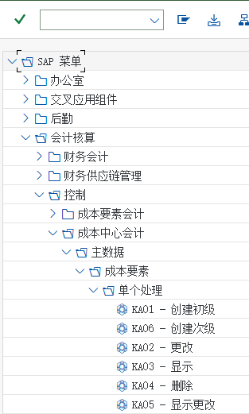
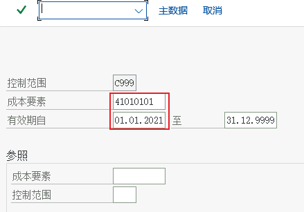
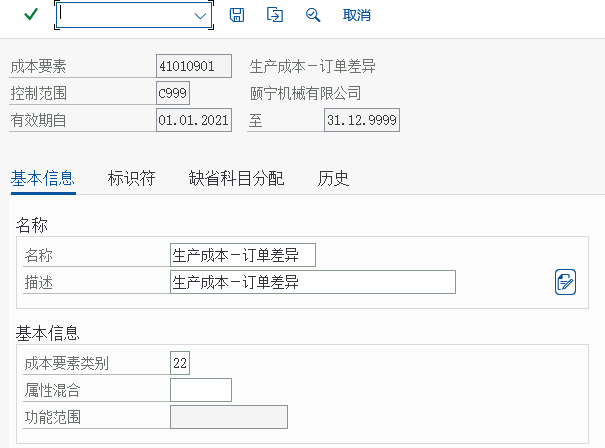
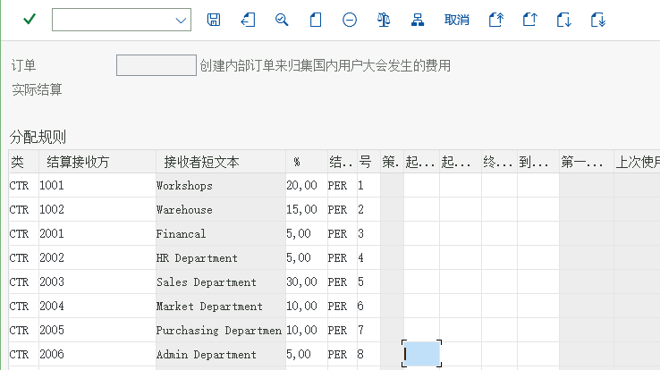
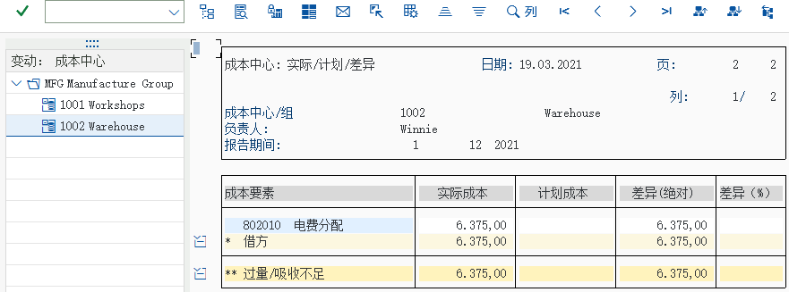

流程③ 产品成本
作业价格如何进产品成本 · 订单结算与差异 41010901 · 教材未演示的 CK11N/CK24
产品成本核算（CO-PC）回答「这批货的成本是多少、差异是多少」。要特别说明：教材的 CO 模块没有演示产品成本的功能（没有 CK11N/CK24 的任务），所以本页的任务不是照抄教材，而是把已演示的机制接起来 —— 作业类型与作业价格（KL01/KP26）、内部订单结算（KO88）、以及教材任务 05 提到的那条接口：成本要素 41010901 生产成本－生产订单差异（成本要素类别 22 外部结算）。哪些是教材画面、哪些是标准功能，本页逐条标注。
产品成本的三条主线
| 主线 | 做什么 | 教材 CO 覆盖情况 | 关键事务码 |
|---|---|---|---|
| ① 成本估算（事前） | 按 BOM + 工艺路线算出物料的标准成本（标准价 S 的物料必须做），发布后更新物料主数据的标准价 | 教材 CO 未演示（PP 站有成本核算批量 10 的物料画面；CK11N/CK24 属标准功能） | CK11N · CK24 · CK40N · CK13N |
| ② 订单成本（事中） | 生产订单归集料（261 领料）、工（报工 × 作业价格）、费（间接费用分摊），收货时按标准价/计划价入库 | 机制在教材里有：作业类型与作业价格（任务 10/12）、结算与结算成本要素（任务 33 的同类机制） | CO01 · CO11N · KKBC_ORD · MB31 |
| ③ 差异与期末（事后） | 算订单差异（投入 − 产出），结算差异到成本要素 41010901 生产成本－生产订单差异，再跑实际成本核算（物料账） | 教材任务 05 提到接口：41010901 的类别是「22 外部结算」 | KKS1 · KKS2 · CO88 · CKMLCP |
本页的「教材未演示」标注怎么读
凡是标注「教材未演示」的，表示这本《S4.docx》的 CO 模块里没有对应的任务与画面；本站给出的是标准功能的事务码与做法，供后续进阶使用。带「画面 N」编号的图仍然是教材原书的真实截图（来自其它任务），用来证明同一套机制在教材环境里确实跑得起来（例如作业价格、结算凭证、结算成本要素）。
教材已演示的接口 ①：作业类型与作业价格（任务 10/12）
任务 12
设置作业输出价格
KP26教学要点任务 12 是教材里与产品成本最直接相关的一段手顺：给成本中心 1001 维护作业类型的计划作业量与价格（MAC 固定 460.00 / 可变 170.00，SET 固定 300.00，计划作业量各 19,200 H）。生产订单报工时，系统就是按这些价格把「工」的成本算进产品成本的 —— 价格错，产品成本就错。
IMG 路径（教材后台菜单）会计核算 → 控制 → 成本中心会计 → 计划 → 作业输出/价格 → KP26 → 更改

画面 1教材《S4.docx》· CO 任务 12 设置作业输出价格 · 原图 01_1_image412.png 会计核算－控制－成本中心会计－计划－作业输出/价格－KP26－更改

画面 2教材《S4.docx》· CO 任务 12 设置作业输出价格 · 原图 02_1_image413.png 点击工具栏上的概览屏幕(F5)

画面 3教材《S4.docx》· CO 任务 12 设置作业输出价格 · 原图 03_1_image414.png 
画面 4教材《S4.docx》· CO 任务 12 设置作业输出价格 · 原图 04_1_image415.png
| 作业价格在成本流里的作用 | 说明 |
|---|---|
| 成本中心 → 生产订单 | 报工（PP 侧的工时确认）按「作业类型 × 价格」把成本从成本中心搬到订单上 |
| 对方项目 | 作业分配用 43 类次级成本要素：教材里的 801020 机器时间分配、801030 准备时间分配 |
| 计划价 vs 实际价 | 教材用 KP26 手工维护计划价；月末用实际作业量重算实际价属标准功能（KSS2/KSII，教材未演示） |
| 没维护价格会怎样 | 作业分配金额为 0 → 产品只吸收到材料成本，成本被低估 |
教材已演示的接口 ②：差异成本要素 41010901（任务 05）
任务 05
新建初级成本要素
KA01教学要点任务 05 里有一句全站最关键的提示：「所有损益类科目都是初级成本要素，除了 41010901 生产成本－生产订单差异的成本要素类别是『22 外部结算』，其他所有初级成本要素的类别都是『1 初级成本/成本降低产生的利润』」。这句话说明：生产订单结算产生的差异，在 CO 里用一个专门的成本要素来承接 —— 它就是产品成本与成本中心会计之间的接口。
IMG 路径（教材后台菜单）会计 → 控制 → 成本中心会计 → 主数据 → 成本要素 → 单个处理 → KA01-创建初级成本
CO 用“成本要素”来管理成本流，成本要素和财务会计里的科目类似
会计－控制－成本中心会计－主数据－成本要素－单个处理－KA01-创建初级成本
画面 5教材《S4.docx》· CO 任务 05 新建初级成本要素 · 原图 01_1_image352.png lu41010101

画面 6教材《S4.docx》· CO 任务 05 新建初级成本要素 · 原图 02_1_image353.png 
画面 7教材《S4.docx》· CO 任务 05 新建初级成本要素 · 原图 02_2_image354.png 原书提示重复上述步骤，所有损益类科目都是初级成本要素，除了 41010901 生产成本－生产订单差异的成本要素类别是 “ 22 外部结算”，其他所有初级成本要素的类别都是 “ 1 初级成本/成本降低产生的利润”解释“41010901 生产成本－生产订单差异”是生产订单结算产生的，是管理会计计算初结果后，使用一种特殊的成本要素类别“22 外部结算”。

画面 8教材《S4.docx》· CO 任务 05 新建初级成本要素 · 原图 03_1_image357.png 
画面 9教材《S4.docx》· CO 任务 05 新建初级成本要素 · 原图 04_1_image358.png 
画面 10教材《S4.docx》· CO 任务 05 新建初级成本要素 · 原图 04_2_image359.png
{kind=link}
{kind=link}
{kind=link}
| 成本要素 | 类别 | 它在产品成本里扮演什么角色 |
|---|---|---|
41010901 生产成本－生产订单差异 | 22 外部结算 | 订单结算/差异结算的落点：订单实际成本与产出（标准价入库）的差额最终记在这里 |
801020 机器时间分配 · 801030 准备时间分配 | 43 内部作业 | 作业成本从成本中心流向订单的通道（作业类型 KL01 上指定） |
802010 电费分摊 | 42 分摊 | 间接费用分摊进成本对象（教材任务 23 用的就是这一类） |
803010（内部订单结算用） | 21 内部结算 | 结算到成本中心时使用的次级成本要素（教材任务 29/33） |
成本要素类别不是随便选的类别决定「这个成本要素能往哪过账」：22 类只能在结算时用，43 类只能在作业分配时用。教材里每一个新建的次级成本要素都对应一种用途 —— 这也是为什么教材要你一个个建、而不是复制。类别细节可在
KA06 的 F4 帮助里看到（教材未展开讲）。结算机制：从订单到接收方（教材任务 29/33 的同类机制）


{kind=link}



{kind=link}

| 结算的目标对象 | 接收方类别 | 教材是否演示 | 说明 |
|---|---|---|---|
| 成本中心 | CTR | 演示（任务 31/33） | 份额制，合计 100% |
| 总账科目 / 成本要素 | G/L / FXA | 未演示 | 结到固定科目时会生成 FI 凭证 —— 这时 CO 与 FI 又交汇了 |
| 资产（在建工程） | FXA | 未演示 | 项目型支出资本化的常用做法 |
| 其他订单 / WBS 元素 | ORD / WBS | 未演示 | 内部订单之间、订单与项目之间的成本传递 |
| 生产订单 / 产品成本收集器 | ORD / WBS（CO88 批量） | 未演示（PP 站有生产订单画面） | 生产订单结算走同样的分配结构机制 |
关键事务码与对象（教材未演示的用「未演示」标出）
| 事务码 | 用途 | 教材 CO 是否演示 |
|---|---|---|
CK11N | 创建物料成本估算（单个物料，带成本核算变式） | 未演示 |
CK24 | 标记/发布标准成本（把估算结果更新到物料主数据） | 未演示 |
CK40N | 成本核算运行（批量跑一批物料） | 未演示 |
CK13N | 显示成本估算结果（看成本构成/成本组件） | 未演示 |
KKBC_ORD | 订单成本分析（生产订单/内部订单的成本报表） | 未演示 |
KO88 | 结算单个订单（内部订单；生产订单同样用它） | 演示（任务 33，对象是内部订单） |
KKS1 / KKS2 | 订单差异计算（单个 / 批量） | 未演示 |
CO88 | 批量结算生产订单 | 未演示 |
CKMLCP | 实际成本核算（物料账：期末把实际成本分摊到物料） | 未演示 |
KP26 | 维护作业输出价格（产品成本里「工」的单价） | 演示（任务 12） |
KA06 | 建次级成本要素（作业/分摊/结算要素） | 演示（任务 06） |
CS01 / CA01 | BOM / 工艺路线（成本估算的输入） | 未演示（属 PP） |
成本核算变式（IMG，教材未演示）控制 → 产品成本核算 → 成本核算变式 → 定义成本核算变式（每个变式指定：成本核算类型、估价变式、日期控制、数量结构控制）
教材未演示、但项目必用（明确清单）
- 物料标准成本估算与发布：
CK11N（估）→CK24（标记/发布）→ 物料主数据价格控制为S时才会真正生效；成本核算变式与估价变式都在 IMG 里配。 - 生产订单成本：订单归集 261 领料、报工（作业价格）、间接费用，收货按标准价入库；成本分析用
KKBC_ORD（教材未演示）。 - 订单差异与结算：
KKS1/KKS2算差异 →CO88结算 → 差异进41010901（教材只提了这个成本要素本身）。 - 实际成本核算（物料账
CKMLCP）与价格差异分摊：把期间实际成本分摊到物料，让「实际成本」落到存货与销售成本上。 - 间接费用管理（CO-OM-CCA 的成本中心计划
KP06、作业价格重估KSS2/KSII、间接费用分摊表KSU1等）：教材只演示了分配与分摊。 - 获利能力分析（CO-PA）与利润中心会计：教材完全未涉及。
常见错误与排查（迁移到项目环境时最常踩的）
| 症状 | 原因 | 处理 |
|---|---|---|
| 产品只吸收了材料成本、没有工和费 | 作业类型没维护价格（KP26），或成本中心没有作业 | 给成本中心维护计划作业量与价格（任务 12 的做法） |
| 订单结算报「没有分配结构」 | 结算参数文件没挂分配结构，或生产订单所用参数文件缺结算成本要素 | 对照内部订单的配置链（任务 28/29）逐项检查 |
| 差异不知道去哪了 | 差异被结到差异成本要素后没有进报表，或物料价格控制是 V | 看 41010901 的行项目（KOB1）；标准价物料才走差异科目 |
| CK11N 报「没有找到 BOM/工艺路线」 | 物料没建 BOM（CS01）或工艺路线（CA01） | 先补 PP 侧主数据（教材 PP 站有画面） |
| CK24 发布后物料价格没变 | 只做了「标记」没有「发布」，或已过账期间不许改价 | 确认发布成功；跨期价格要在允许的期间内发布 |
与 PP / MM 的关系
| 接口 | 谁提供 | CO 侧看到什么 |
|---|---|---|
| 物料价格控制 | MM 物料主数据（会计 1 视图）：V 移动平均价 / S 标准价 | S 的物料才有「标准成本」与差异；V 的物料差异直接进存货价值 |
| BOM / 工艺路线 | PP（CS01/CA01） | 成本估算的输入（料与工序） |
| 生产订单 / 报工 | PP（CO01/CO11N） | 订单是 CO 的成本对象：归集料工费、结算差异 |
| 领料（261）与产成品入库 | MM / PP（MB1A/MIGO） | 订单上的材料成本行与产出（按标准价入库的贷方） |
| 差异科目 41010901 | CO（订单结算） | 生产成本－生产订单差异（类别 22 外部结算，教材任务 05 提到） |